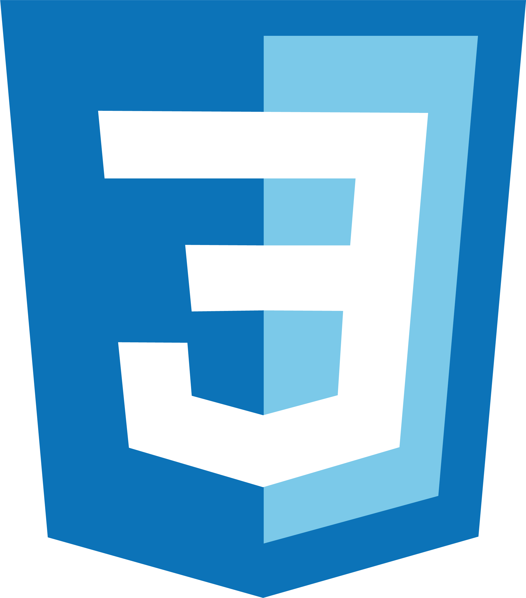
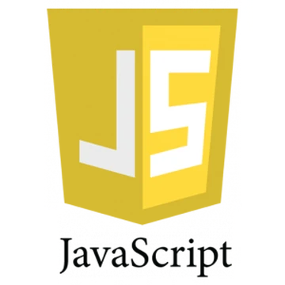

Login
Login
Software developer
Wil jij apps, websites en slimme software bouwen én ontdekken wat AI daarin kan betekenen? Tijdens de opleiding Software Developer – Applied AI leer je programmeren, software ontwerpen, testen en beveiligen. Je werkt met moderne technologieën, databases en verschillende programmeertalen. Daarnaast ontdek je hoe AI kan helpen bij het ontwikkelen van software en leer je kritisch omgaan met AI-tools. Door praktijkgerichte projecten en samenwerkingen met bedrijven ontwikkel je de vaardigheden die je nodig hebt voor een toekomst in de IT.
welke vakken krijg je?
- programmeren (verschillende programeer talen)
- basis ICT lessen
- basisprogrameeren 1 en 2 , website 1 en 2
- devops, wepablicatie en oop
- Nederlands, Engels, rekenen en burgerschap
- keuzedelen om je kennis te verdiepen en te verbreden
- MBO Niveau 4 - middenkader
-
leerweg BOL
-
Opleiding duurt 3 jaar tot 4 jaar
-
richting
-
ICT & Media > ICT
-
lesgeld €1554,- per jaar
-
opleiding begint op 24 augustus 2027
-
crebocode 25998
- heyendaalse weg 98
- Nijmegen
meelopen
we weten nog niet wanneer je mee kunt lopen
Wil jij weten wanneer er weer nieuwe momenten voor meelopen zijn?
open dagen
29 jan '27
16:00 - 20:00
Open Dag mbo op 29 januari 2027 meer te weten ->19 mrt '27
16:00 - 18:00
Open Dag mbo op 19 maart 2027 meer te weten ->22 jun '27
18:00 - 20:00
info-avond mbo op 22 juni 2027 meer te weten ->evenementen
04 feb '27
19:30 - 20:30
online voorlichting voor ouders/ verzorgers van studiekiezers meer te weten ->30 mrt '27
19:30 - 20:30
online voorlichting voor ouders/ verzorgers van studiekiezers meer te weten ->programeertalen
html
html word gebruikt voor websites te programeren

css
css wordt gebruikt om stiling meet
te geven aan html voor websites

java
java gebruiken wij om functie te maken die dingen
afspeelt zo als het spel galgje of
mastermind

javascript
javascript wordt gebruiked om
interactie toe te voegen aan website

php
php wordt gebruikt om data bases toe te voegen
en te interateren voor websites
Maandag
vak Website2
class TIA4V1A
docent WITH01
lokaal HEY-1.15
09:30-11:15
vak Engels
class TIA4V1A
docent MEMA20
lokaal HEY-1.15
11:15-12:15
vak Basis Programmeren2
class TIA4V1A
docent NIRO01
lokaal HEY-1.16
13:15-15:30
Dinsdag
vak ITstudy
class TIA4V1A
docent NIRO01, SEER01
lokaal HEY-1.14
08:30-10:00
vak Website2
class TIA4V1A
docent WITH01
lokaal HEY-1.15
10:15-11:45
vak DevOps
class TIA4V1A
docent RADA03
lokaal HEY-1.13
11:45-12:45
vak Persoonlijke & Professionele Ontwikkeling
class TIA4V1A
docent MEMA01, NIRO01
lokaal HEY-1.14
13:15-14:15
Woensdag
vak Basis Programmeren2
class TIA4V1A
docent NIRO01
lokaal HEY-1.17
08:30-10:45
vak Website2
class TIA4V1A
docent WITH01
lokaal HEY-1.15
10:45-12:15
Donderdag
vak Burgerschap
class TIA4V1A
docent ALAM02
lokaal HEY-1.16
08:30-10:00
vak Rekenen
class TIA4V1A
docentROPA02
lokaal HEY-1.20
10:15-11:45
vak Website2
class TIA4V1A
docent WITH01
lokaal HEY-1.14
12:45-14:15
vak Basis Programmeren2
class TIA4V1A
docent NIRO01
lokaal HEY-1.15
14:15-16:30
Vrijdag
vak Basis Programmeren2
class TIA4V1A
docent NIRO01
lokaal HEY-1.15
08:30-10:00
vak DevOps
class TIA4V1A
docent RADA03
lokaal HEY-1.13
10:15-11:45
vak Nederlands
class TIA4V1A
docent BOJA05
lokaal HEY-1.15
12:15-13:45